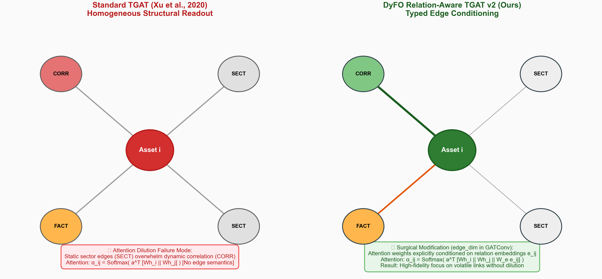
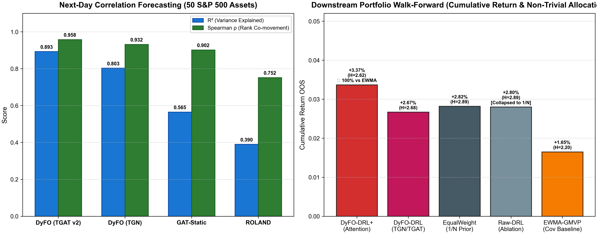
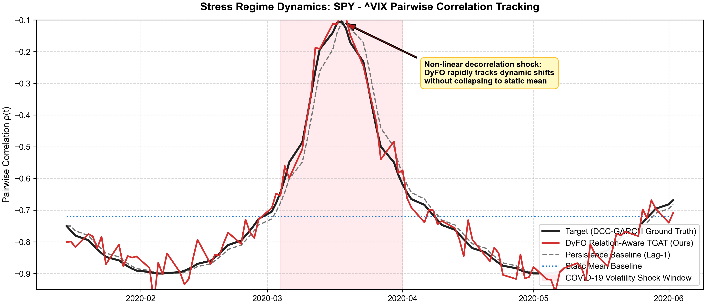

Previsão Causal de Co-movimentos e Matrizes de Covariância em Redes Financeiras Dinâmicas com TGAT Relation-Aware.

Modelos clássicos de grafos temporais (TGAT Xu et al., 2020) foram desenhados para redes sociais homogêneas.
CORR: Correlações estatísticas altamente dinâmicas.SECT: Relações estáticas de setor GICS.FACT: Co-exposição a fatores de risco sistemáticos (Fama-French).
Injetamos embeddings de tipo de aresta eij ∈ ℝ16 diretamente na formulação de atenção da camada GATConv(edge_dim=16):
Sem memória GRU persistente por nó. Elimina a deriva de estado de longo prazo, gradientes explosivos e custo de TBPTT sequencial.
Processa o fluxo contínuo de eventos assíncronos (preços, balanços, decisões do FED) sobre ring buffers locais (\(k=20\)) com codificação Time2Vec.
Avaliação em 9 janelas walk-forward não-sobrepostas (2018–2025):

Otimização de alocação em painel multi-ativo (18 ativos, 4 classes: Ações, Bonds, Ouro, Cripto):
Comportamento sob Choques de Volatilidade:
Integração com PORTA e ORION:
DyFOAdapter exporta StructuralGraphSnapshot causal para alimentar a ablação do PORTA (RQ6/RQ6R) e o construtor de estado multimodal do ORION.